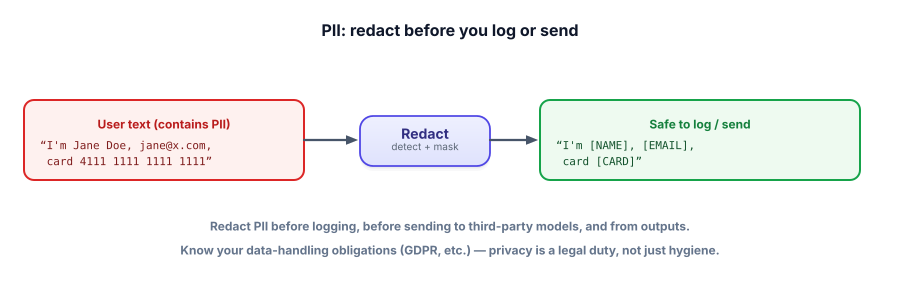

PII & privacy
LLM apps swim in user data — and they log it, send it to third-party models, and sometimes repeat it back. Mishandling personal information isn’t just bad hygiene; it’s a legal liability. This lesson is how to handle data responsibly without crippling your app.
Why privacy is a first-class concern here
Three things make LLM apps privacy-risky. They log heavily (you need traces to debug, Track 6 — but traces contain user data). They often call third-party model APIs (your users’ data leaves your servers). And they can echo data back (a model might surface one user’s info to another, or repeat sensitive input). On top of that, regulations like GDPR give you real obligations around personal data. So you must know what PII flows through your system and control it deliberately.

PII (personally identifiable information) is data that identifies a person — names, emails, phone numbers, addresses, government IDs, payment details. Redaction (masking) replaces PII with placeholders before storing or sending. Data minimization means collecting and retaining only what you actually need. Retention limits mean deleting data after it’s served its purpose. Together these reduce both risk and regulatory exposure.
Try a redactor
This catches common PII with simple patterns. Type (or use the sample) and watch it mask emails, phones, cards, and IDs before anything would be logged.
PII redactor
Mask PII at the boundary. For production, a library like the free, open-source Microsoft Presidio detects far more than regex can.
import re
PATTERNS = {
"[EMAIL]": r"[\w.+-]+@[\w-]+\.[\w.-]+",
"[CARD]": r"\b(?:\d[ -]*?){13,16}\b",
"[SSN]": r"\b\d{3}-\d{2}-\d{4}\b",
"[PHONE]": r"\(?\d{3}\)?[ -]?\d{3}[ -]?\d{4}",
}
def redact(text):
for tag, pat in PATTERNS.items():
text = re.sub(pat, tag, text)
return text
raw = "Email jane@x.com, card 4111 1111 1111 1111"
log(redact(raw)) # "Email [EMAIL], card [CARD]" → safe to store
# Redact at THREE points: before logging, before third-party API calls, and on outputs.
# For names/addresses and high accuracy, use Presidio (free) — a model-based detector.Regex handles structured PII (emails, cards, IDs) well; names and addresses need a model-based detector like Presidio. The key habit is redacting at the boundary — the moment data would leave your control or land in a log.
- LLM apps leak PII via heavy logging, third-party API calls, and echoing data back.
- Redact PII before logging, before sending to third parties, and from outputs.
- Practice data minimization and retention limits — don’t collect or keep what you don’t need.
- Regex catches structured PII; use a model-based detector (e.g., Presidio) for names/addresses.
- Privacy is a legal duty (GDPR, etc.), not optional hygiene — know your obligations.
Your support bot calls a third-party LLM API and logs full conversations for debugging. A privacy review flags it. What’s the right fix?
1. Name the three points in an LLM pipeline where you should redact PII.
2. Why is regex insufficient for redacting names and addresses, and what do you use instead?
3. A user invokes their “right to be forgotten.” What does that imply for your logs, vector store, and any fine-tune data?
▸ Show solutions & reasoning
1. (a) Before logging/tracing (so stored traces don’t contain raw PII), (b) before sending to a third-party model/API (so data doesn’t leave your control unnecessarily), and (c) on outputs (so the model doesn’t surface PII to the wrong person). Redaction lives at every data boundary.
2. Names and addresses have no fixed pattern — “Jane Doe” looks like ordinary words, and addresses vary wildly — so regex either misses them or over-matches. You use a model-based PII detector (named-entity recognition), e.g., the free Microsoft Presidio, which understands context to find person names, locations, and organizations. Use regex for structured tokens (emails, cards, SSNs) and a model for unstructured PII.
3. You must be able to actually delete that person’s data wherever it lives: remove or anonymize their entries in logs/traces, delete their documents and the corresponding vectors from the vector store (and re-index), and — critically — if their data was used to fine-tune a model, you generally can’t “unlearn” it from the weights, so you’d need to retrain without it. This is exactly why fine-tuning on personal data is risky and why minimization and good data lineage matter from day one.
There’s a real tension in this track: Track 6 told you to log everything for debugging and evals, and this lesson tells you to be careful what you store. The resolution isn’t to pick one — it’s to design them together. Redact PII before it’s written to traces (so your logs are useful but not a liability), keep raw data only transiently where you truly need it, set retention windows that auto-delete, and gate access to whatever sensitive data remains. Done right, you get full observability over redacted data, which is enough to debug the vast majority of issues. When you genuinely need un-redacted data (a hard bug), pull it under stricter access controls and short retention.
Two broader points for production. First, the third-party question is often the biggest one: sending user data to an external model API means it leaves your infrastructure, so you must check the provider’s data-handling terms (do they train on it? how long do they retain it?), and for the most sensitive data, consider self-hosting an open model (the free local stack from this course) so nothing leaves at all. Second, privacy is a legal and trust issue, not just technical — regulations like GDPR/CCPA carry real penalties, and users’ trust is hard to win back once lost. Treat personal data as something you’re borrowing, not owning: collect the minimum, protect it in transit and at rest, redact it from logs and outputs, delete it when done, and be able to honor deletion requests. That posture keeps you both compliant and trustworthy.
We’ve protected your instructions and your data. Now we make sure the model doesn’t produce harmful content in the first place — or at least never ships it. Next: content safety.